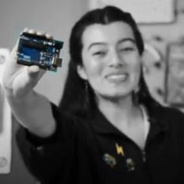

Hi! I'm Nina 🌋
I love to understand how things work and I keep myself wondering... so I studied Mechatronics engineering trying to find all the answers... and guess what?... They weren't there, but luckly I found a lot of clues and above all I knew a lot of people with great curiosity who taught me how to search and to ask the right questions... at the same time I found that my passion is to create using many tools so I went deeper in arts research and spent my whole free time in learning theater and again wonderful people appeared and show me a completely new world where imagination is the only rule. I've learnt how to bring together these aparently distant worlds and share my curiosity with others through education where I'm free to explore and encourage others to keep asking!
(🌋 By the way, Nina is a Quechua word, it means fire)
|
|---|